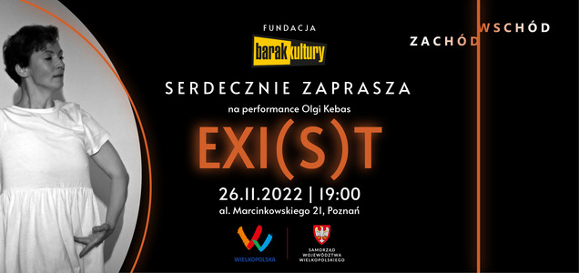
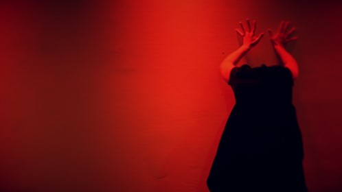
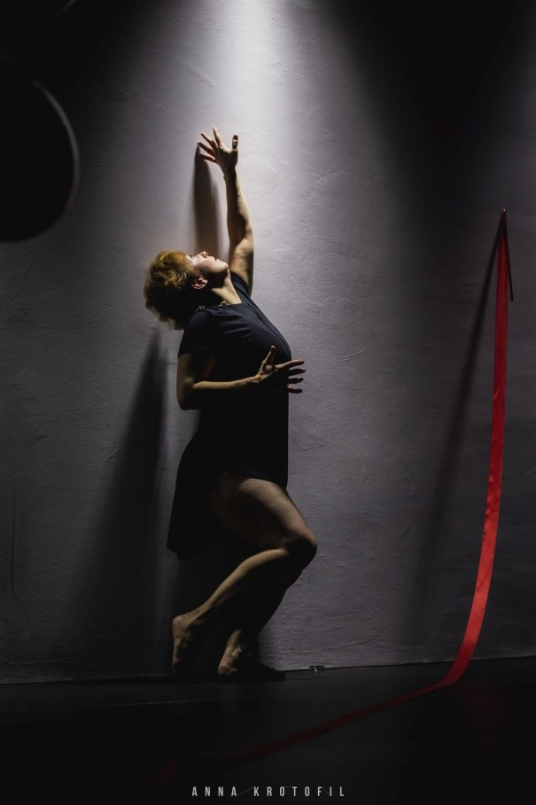
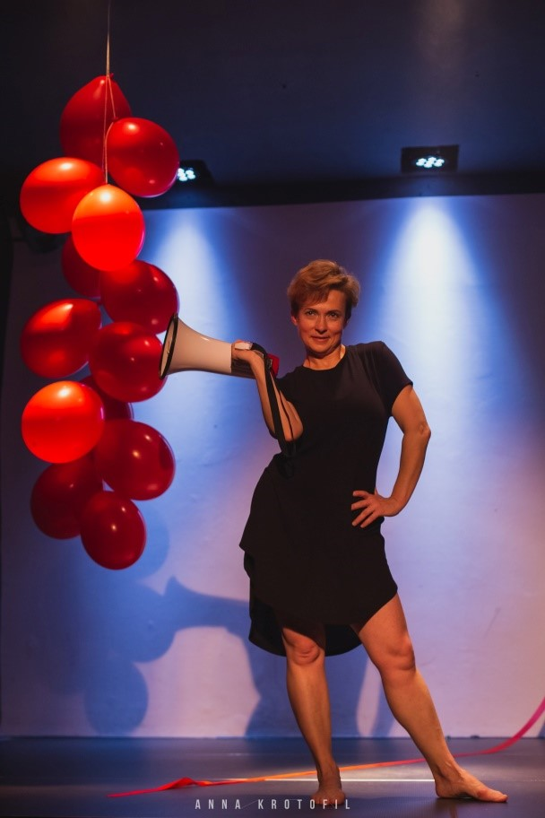
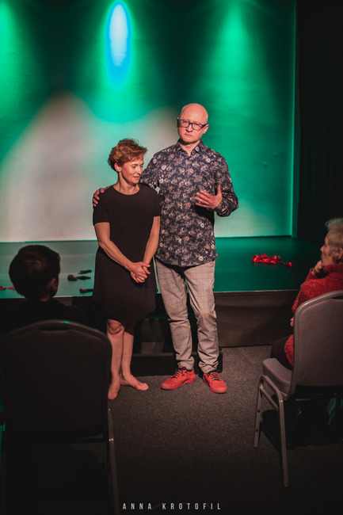
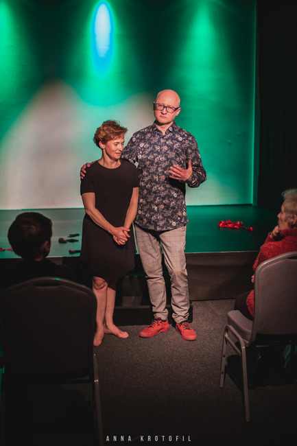
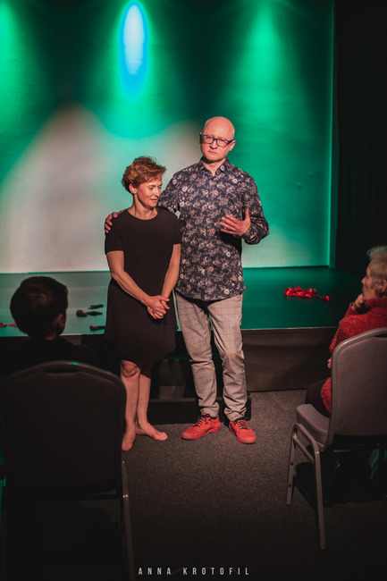

Exi(S)t (Ukraina-Polska, 2022)

Pomysł, taniec - Olha Kebas (UA)
Reżyseria - Przemysław Prasnowski (PL)
Muzyka – Iris Forest, Folknery (UA) itp.
Wideo – Kamil Krotofil (PL)
Wspierany przez:
Fundacja Barak Kultury, Poznań (Polska),
Hellerau, Drezno (Niemcy)
Reżyseria - Przemysław Prasnowski (PL)
Muzyka – Iris Forest, Folknery (UA) itp.
Wideo – Kamil Krotofil (PL)
Wspierany przez:
Fundacja Barak Kultury, Poznań (Polska),
Hellerau, Drezno (Niemcy)
Tytułowa gra słów EXIST & EXIT ma skłaniać do zastanowienia się nad tym, jak powstaje historia, co istnieje w rzeczywistości, a co jest tylko iluzją… Czy kultura i sztuka przyczyniają się do rozwoju społeczeństwa, czy też są w stanie niszczyć jako narzędzia propagandy? Czy kultura jest w stanie przełamać impas i pomóc w wyjściu z kryzysu?
Wideo performance Exi(S)t powstał i został
zrealizowany w ramach projektu
„Porozmawiaj ciałem” Platformy Tańca Nowoczesnego (Ukraina), 2022




 

